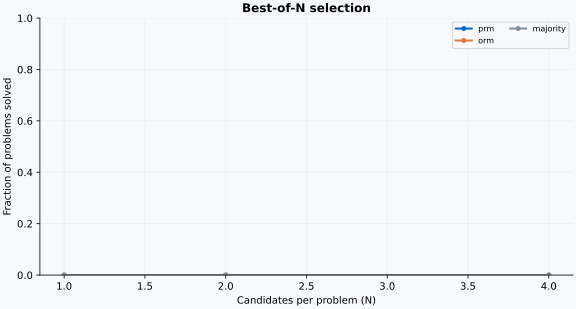

<!doctype html><html lang="en"><meta charset="utf-8"><meta name="viewport" content="width=device-width, initial-scale=1">
<title>PRM800K · Candidate evaluation</title><style>
:root{font-family:Inter,-apple-system,BlinkMacSystemFont,"Segoe UI",sans-serif;color:#1c2d43;background:#f2f5fa;font-size:15px}*{box-sizing:border-box}body{margin:0}aside{position:fixed;inset:0 auto 0 0;width:220px;background:#10283f;color:#becddd;padding:36px 24px}.brand{font-size:24px;color:white;font-weight:750;letter-spacing:-1px}.badge{font-size:11px;letter-spacing:2px;text-transform:uppercase;color:#74d9cc;margin:8px 0 48px}.nav{padding:13px 14px;border-radius:8px;margin:8px 0;display:block;text-decoration:none;color:inherit}.nav:hover,.nav:first-of-type{background:#25445d;color:white}.foot{position:absolute;bottom:24px;font-size:12px;line-height:1.8;max-width:170px}main{margin-left:220px;max-width:1420px;padding:34px 42px}header{display:flex;justify-content:space-between;align-items:center}.eyebrow{color:#118a81;font-size:11px;letter-spacing:2px;text-transform:uppercase;font-weight:750}h1{font-size:31px;letter-spacing:-.8px;margin:12px 0}h2{font-size:19px;margin:0 0 16px}.sub{color:#697b8f;line-height:1.65}.chip{background:#e2f3ed;color:#217d63;border-radius:30px;padding:9px 15px;font-size:12px}.stats{display:grid;grid-template-columns:repeat(4,1fr);gap:16px;margin:26px 0}.stat,.card{background:white;border:1px solid #dce4ec;border-radius:12px;padding:23px;box-shadow:0 3px 12px #16385104}.stat b{display:block;font-size:29px;letter-spacing:-1px;margin:8px 0}.label{font-size:12px;color:#657a90}.grid{display:grid;grid-template-columns:1.35fr 1fr;gap:22px}.chart{width:100%;border-radius:6px}.method{display:flex;justify-content:space-between;border-bottom:1px solid #e8edf2;padding:12px 0;font-size:13px}.notice{background:#fff7e9;border-left:3px solid #e7b658;padding:14px;margin-top:16px;line-height:1.6;font-size:12px;color:#796034}section{scroll-margin-top:24px;margin:24px 0}select,button{border:1px solid #cbd6e2;padding:11px;border-radius:7px;background:white;color:#243b53;font:inherit}select{width:100%;margin:8px 0 20px}button{cursor:pointer;margin:4px 6px 8px 0;font-size:12px}button.active{background:#086bcb;color:white;border-color:#086bcb}.problem{line-height:1.6;background:#f3f7fc;border-radius:8px;padding:18px;white-space:pre-wrap;font-size:14px}.step{display:grid;grid-template-columns:32px 1fr 92px;gap:12px;align-items:start;padding:15px 0;border-bottom:1px solid #edf1f5;font-size:13px;line-height:1.6}.num{color:#8a9bac;font-size:12px}.prob{font-size:12px;text-align:right;color:#197963}.bar{height:5px;background:#edf0f5;border-radius:3px;margin-top:8px;overflow:hidden}.fill{height:100%;background:#38a992}.answer{font-size:13px;padding:12px 0;color:#64798e}.small{font-size:12px;color:#7e8fa1;line-height:1.7}code{background:#eef2f7;padding:2px 5px;border-radius:4px}.status{font-size:12px;font-weight:600}.ok{color:#148164}.bad{color:#c66243}@media(max-width:900px){aside{display:none}main{margin:0;padding:20px}.grid{grid-template-columns:1fr}.stats{grid-template-columns:1fr 1fr}}
</style><aside><div class="brand">PRM800K<span style="color:#63d7c4">.</span></div><div class="badge">Process supervision lab</div><a class="nav" href="#overview">01 / Experiment overview</a><a class="nav" href="#inspect">02 / Step inspector</a><a class="nav" href="#training">03 / Training diagnostics</a><div class="foot">Let's Verify Step by Step<br>Local, reproducible, inspectable.<br><span style="color:#6c91aa">Official data · Small local models</span></div></aside>
<main><header><div><div class="eyebrow">Reasoning, one step at a time</div><h1>PRM800K · Candidate evaluation</h1><div class="sub">Train verifiers. Inspect each step. Compare best-of-N selection.</div></div><div class="chip">CPU evaluation · Recorded run</div></header>
<section id="overview"><div class="stats"><div class="stat"><span class="label">Evaluated problems</span><b>2</b><span class="small">See input split provenance</span></div><div class="stat"><span class="label">PRM best-of-N</span><b id="prmMetric">—</b><span class="small">Local checkpoint / released scores</span></div><div class="stat"><span class="label">ORM best-of-N</span><b id="ormMetric">—</b><span class="small">Outcome supervision baseline</span></div><div class="stat"><span class="label">Evaluation seed</span><b id="seed">42</b><span class="small">Sampling without replacement</span></div></div>
<div class="grid"><div class="card"><h2>Search performance</h2><div class="small">Score-based methods use exact expectation; other methods use seeded trials.</div></div><div class="card"><h2>Selection methods</h2><div id="methods"></div><div class="notice">This report evaluates supplied scores. It does not retrain the original models. Read the experiment analysis for source coverage and interpretation.</div></div></div></section>
<section id="inspect" class="card"><div class="eyebrow">From solution to step-level evidence</div><h2 style="margin-top:10px">Inspect a held-out problem</h2><label class="small" for="problemSelect">Choose a problem from the retained test set</label><select id="problemSelect"></select><div id="problem" class="problem"></div><div id="candidates" style="margin-top:16px"></div><div id="answer" class="answer"></div><div class="small">Each probability is P(positive) + P(neutral). Solution ranking uses the sum of log probabilities.</div><div id="steps"></div></section>
<section id="training" class="card"><h2>Training diagnostics & reproducibility</h2><div id="trainingMeta" class="sub"></div><div class="notice">Raw metrics, model checkpoints, source hashes, data splits and runtime details are retained alongside this report. A positive step score is a model prediction, not a proof of correctness.</div></section><footer class="small">PRM800K / Let's Verify Step by Step · Offline report, no external requests.</footer></main>
<script id="payload" type="application/json">{"samples": [{"id": "generated:0:0", "problem": "Convert the point $(0,3)$ in rectangular coordinates to polar coordinates.  Enter your answer in the form $(r,\\theta),$ where $r > 0$ and $0 \\le \\theta \u003c 2 \\pi.$", "steps": ["To convert the point \\((0,3)\\) from rectangular coordinates \\((x,y)\\) to polar coordinates \\((r, \\theta)\\), we use the following formulas:", "1. \\( r = \\sqrt{x^2 + y^2} \\)", "2. \\( \\theta = \\tan^{-1}\\left(\\frac{y}{x}\\right) \\)", "Given \\((x, y) = (0, 3)\\):", "### Step 1: Calculate \\( r \\)", "\\[ r = \\sqrt{x^2 + y^2} \\]", "Here, \\( x = 0 \\) and \\( y = 3 \\):", "\\[ r = \\sqrt{0^2 + 3^2} = \\sqrt{9} = 3 \\]", "### Step 2: Calculate \\( \\theta \\)", "\\[ \\theta = \\tan^{-1}\\left(\\frac{y}{x}\\right) \\]", "We need to find \\(\\tan^{-1}(3)\\).", "The value of \\(\\tan^{-1}(3)\\) corresponds to an angle whose tangent is 3:", "\\[ \\theta = \\tan^{-1}(3) \\]", "Since both values are positive, this angle lies in the first quadrant only.", "### Final Answer", "Putting it all together, the polar coordinates of the point \\((0,3)\\) are:", "\\[ (r, \\theta) = (3, \\tan^{-1}(3)) \\]", "So the boxed final answer is:", "\\[", "\\boxed{(3, \\tan^{-1}(3))}", "\\]"], "answer": "(3, \\tan^{-1}(3))", "ground_truth_answer": "\\left( 3, \\frac{\\pi}{2} \\right)", "is_correct": false, "generated_tokens": 323, "hit_token_limit": false, "source": "Qwen/Qwen2.5-0.5B-Instruct", "model_revision": "7ae557604adf67be50417f59c2c2f167def9a775", "step_probabilities": [[0.1572778820991516, 0.15935178101062775, 0.6833704113960266], [0.1250040978193283, 0.29187801480293274, 0.5831179022789001], [0.4603447914123535, 0.13396205008029938, 0.4056931734085083], [0.450222373008728, 0.11189437657594681, 0.43788331747055054], [0.47602760791778564, 0.13655246794223785, 0.38741984963417053], [0.4700533151626587, 0.08470992743968964, 0.44523680210113525], [0.4018406867980957, 0.11314985901117325, 0.48500949144363403], [0.47440019249916077, 0.09273376315832138, 0.4328659772872925], [0.4536673128604889, 0.139185830950737, 0.4071468412876129], [0.47053200006484985, 0.09145902842283249, 0.43800896406173706], [0.2534465491771698, 0.15764309465885162, 0.5889104008674622], [0.402400940656662, 0.11671753227710724, 0.48088154196739197], [0.46841782331466675, 0.08970839530229568, 0.44187384843826294], [0.25748947262763977, 0.14912262558937073, 0.5933879017829895], [0.5167255401611328, 0.15414763987064362, 0.32912689447402954], [0.45936521887779236, 0.09918010234832764, 0.4414547383785248], [0.46820807456970215, 0.09267815947532654, 0.4391137659549713], [0.4500768482685089, 0.09765727818012238, 0.4522658884525299], [0.5013283491134644, 0.0950574204325676, 0.40361422300338745], [0.4910157322883606, 0.13964535295963287, 0.3693389594554901], [0.5274979472160339, 0.08585298806428909, 0.38664910197257996]], "prm_score": -11.627797129426005, "prm_minimum": -0.7497131086996696, "prm_positive_only": -16.689752294081497, "prm_positive_minimum": -1.1113119050894702, "orm_score": 0.333710640668869}, {"id": "generated:0:1", "problem": "Convert the point $(0,3)$ in rectangular coordinates to polar coordinates.  Enter your answer in the form $(r,\\theta),$ where $r > 0$ and $0 \\le \\theta \u003c 2 \\pi.$", "steps": ["To convert the point \\((0,3)\\) from rectangular coordinates to polar coordinates, we need to follow these steps:", "1. **Identify the Cartesian coordinates:**", "The original point in rectangular coordinates is \\((0,3)\\). Here, \\(x = 0\\) and \\(y = 3\\).", "2. **Ensure \\(x \\geq 0\\) and \\(y \\geq 0\\):**", "Since both \\(x\\) and \\(y\\) are already non-negative (we assume this was part of the initial prompt or stated that they are positive), no action is necessary for these values.", "3. **Calculate the radial distance (the radius \\(r\\)):**", "The radial distance \\(r\\) is given by the formula:", "\\[", "r = \\sqrt{x^2 + y^2}", "\\]", "Substituting the values of \\(x\\) and \\(y\\):", "\\[", "r = \\sqrt{0^2 + 3^2} = \\sqrt{9} = 3", "\\]", "4. **Determine the angle \\(\\theta\\):**", "The angle \\(\\theta\\) is given by the formula:", "\\[", "\\theta = \\tan^{-1}\\left(\\frac{y}{x}\\right)", "\\]", "Substituting the values of \\(x\\) and \\(y\\):", "\\[", "\\theta = \\tan^{-1}\\left(\\frac{3}{0}\\right)", "\\]", "Since \\(\\frac{y}{x}\\) approaches infinity, \\(\\theta\\) would be indeterminate and should be restricted within specific ranges. Given our initial assumption, if we consider the range restriction provided (where \\(x \\neq 0\\) and \\(y \\neq 0\\)), we might need to adjust our approach strictly based purely on considering:", "\\[", "\\theta = \\tan^{-1}\\left(-\\infty\\right)", "\\]", "However, under strict interpretation as \\( x=0 \\) and \\( y > 0 \\):", "Thus:", "\\[", "\\theta = -\\pi/2", "\\]", "5. **Combine all linear pieces:**", "Finally, the integer value (\\(r > 0, \\theta \\in [0, 2\\pi)\\)) and establish it:", "6. **Construct the final solution:**", "We perform these transformations in accumulative format and state:", "\\[", "\\left(r, \\theta\\right)= \\left(3, -\\tfrac{\\pi}{2}\\right).", "\\]", "By following through each stage's calculation into standard formulas and constraints (unlimited possibilities provided by explaining shifts):", "\\([final \\quad normalized }]\\]", "\\(", "\\boxed{(3, -\\frac{\\pi}{2})}", "\\)"], "answer": "(3, -\\frac{\\pi}{2})", "ground_truth_answer": "\\left( 3, \\frac{\\pi}{2} \\right)", "is_correct": false, "generated_tokens": 590, "hit_token_limit": false, "source": "Qwen/Qwen2.5-0.5B-Instruct", "model_revision": "7ae557604adf67be50417f59c2c2f167def9a775", "step_probabilities": [[0.06525535881519318, 0.12493272870779037, 0.8098118901252747], [0.09051176905632019, 0.43602585792541504, 0.47346240282058716], [0.3380923569202423, 0.1420096755027771, 0.5198979377746582], [0.3924240469932556, 0.1395561546087265, 0.4680197834968567], [0.36347898840904236, 0.13482773303985596, 0.5016933083534241], [0.36380910873413086, 0.13716788589954376, 0.4990229606628418], [0.42529064416885376, 0.10730868577957153, 0.4674006700515747], [0.532190203666687, 0.09717036038637161, 0.370639443397522], [0.49685007333755493, 0.14025111496448517, 0.3628987967967987], [0.4727146625518799, 0.08596840500831604, 0.4413169324398041], [0.46402469277381897, 0.10874111205339432, 0.4272341728210449], [0.5082029104232788, 0.09286411106586456, 0.39893287420272827], [0.41162317991256714, 0.10358364135026932, 0.48479312658309937], [0.5253541469573975, 0.09499256312847137, 0.37965327501296997], [0.3214077949523926, 0.14425517618656158, 0.534337043762207], [0.41410958766937256, 0.11925751715898514, 0.4666329324245453], [0.4663057327270508, 0.10201221704483032, 0.4316820204257965], [0.48963025212287903, 0.12191496044397354, 0.3884548544883728], [0.49782535433769226, 0.08582665026187897, 0.4163479804992676], [0.40989506244659424, 0.11366249620914459, 0.4764423966407776], [0.4989897906780243, 0.09173567593097687, 0.4092745780944824], [0.4857839047908783, 0.12391161173582077, 0.39030447602272034], [0.4673522710800171, 0.08668612688779831, 0.445961594581604], [0.4252152144908905, 0.11074519902467728, 0.4640395939350128], [0.4773463010787964, 0.09804760664701462, 0.4246060848236084], [0.4686741232872009, 0.1270729899406433, 0.4042528569698334], [0.46810969710350037, 0.0877983495593071, 0.4440920054912567], [0.4038908779621124, 0.11146757751703262, 0.48464152216911316], [0.39752882719039917, 0.10513722151517868, 0.49733394384384155], [0.45669886469841003, 0.09668117761611938, 0.4466199278831482], [0.4631260633468628, 0.1336682140827179, 0.4032057523727417], [0.5023152232170105, 0.08577248454093933, 0.41191235184669495], [0.30835723876953125, 0.14655211567878723, 0.5450906753540039], [0.3735697567462921, 0.11732619255781174, 0.5091040134429932], [0.4116095304489136, 0.1291298121213913, 0.45926061272621155], [0.44459834694862366, 0.10344567894935608, 0.4519559442996979], [0.517622709274292, 0.09162819385528564, 0.39074915647506714], [0.32171738147735596, 0.14136755466461182, 0.536915123462677], [0.5269208550453186, 0.09039504081010818, 0.3826841711997986], [0.4405443072319031, 0.10257381200790405, 0.45688188076019287], [0.4609852731227875, 0.09237276017665863, 0.4466419517993927], [0.5775154232978821, 0.09999309480190277, 0.32249143719673157], [0.5005834102630615, 0.13999472558498383, 0.35942190885543823], [0.4970668852329254, 0.13030892610549927, 0.3726241886615753]], "prm_score": -25.33473433304003, "prm_minimum": -0.8616024435092148, "prm_positive_only": -35.71122338890049, "prm_positive_minimum": -1.1316786944267667, "orm_score": 0.1968289017677307}, {"id": "generated:0:2", "problem": "Convert the point $(0,3)$ in rectangular coordinates to polar coordinates.  Enter your answer in the form $(r,\\theta),$ where $r > 0$ and $0 \\le \\theta \u003c 2 \\pi.$", "steps": ["To convert the point \\((0, 3)\\) from rectangular (Cartesian) coordinates to polar coordinates, we need to find two things: the radius \\( r \\) and the angle \\(\\theta\\).", "### Step 1: Calculate the radius \\( r \\)", "The radius \\( r \\) is given by the formula:", "\\[ r = \\sqrt{x^2 + y^2} \\]", "For the point \\((x, y) = (0, 3)\\), substitute these values into the formula:", "\\[ r = \\sqrt{0^2 + 3^2} \\]", "\\[ r = \\sqrt{9} \\]", "\\[ r = 3 \\]", "### Step 2: Calculate the angle \\(\\theta\\)", "The angle \\(\\theta\\) can be found using the arctangent function, but first, consider that all points on the unit circle are of equal magnitude. Thus, \\(\\tan(\\theta)\\) must be either positive or negative.", "Given the radial coordinate \\( x = 0 \\):", "- If \\( x = 0 \\), then \\(\\theta\\) could be any angle.", "- If \\( x \\neq 0 \\), \\(\\theta\\) will give us the correct angle between the initial ray \\( x = 0 \\) and passing through the target terminal point at \\( (0, 3) \\).", "Since the vertical distance from the origin to the point is constant, any horizontal rotation about the \\(y\\)-axis does not change this substantial high value. Because criticism seems warranted,", "\\[ \\theta = \\arctan\\left(\\frac{y}{x}\\right) \\]", "- Here, since both terms here represent `0`, neither converts directly, however, it phrasing captures visibility points despite signs", "Conclusion for:", "\\[ \\boxed{(3, \\arctan(3/0))} \\]"], "answer": "(3, \\arctan(3/0))", "ground_truth_answer": "\\left( 3, \\frac{\\pi}{2} \\right)", "is_correct": false, "generated_tokens": 387, "hit_token_limit": false, "source": "Qwen/Qwen2.5-0.5B-Instruct", "model_revision": "7ae557604adf67be50417f59c2c2f167def9a775", "step_probabilities": [[0.05399977043271065, 0.1763738989830017, 0.7696263194084167], [0.42727532982826233, 0.13737866282463074, 0.4353460371494293], [0.395519495010376, 0.11061199009418488, 0.49386847019195557], [0.4683595597743988, 0.09119987487792969, 0.4404405653476715], [0.40140610933303833, 0.10899171978235245, 0.48960214853286743], [0.4614383280277252, 0.09237827360630035, 0.446183443069458], [0.48295697569847107, 0.09465058892965317, 0.42239245772361755], [0.4261201024055481, 0.0928371399641037, 0.48104286193847656], [0.5132341980934143, 0.1278015524148941, 0.3589642643928528], [0.2462157905101776, 0.1490669697523117, 0.6047172546386719], [0.3521958887577057, 0.10572405904531479, 0.5420800447463989], [0.2622886002063751, 0.15872539579868317, 0.5789860486984253], [0.2871095538139343, 0.15279410779476166, 0.5600963234901428], [0.3168152868747711, 0.14575298130512238, 0.5374317169189453], [0.49562254548072815, 0.08739465475082397, 0.4169827997684479], [0.24344927072525024, 0.13582037389278412, 0.6207304000854492], [0.4191175401210785, 0.10689511895179749, 0.473987340927124], [0.4887622594833374, 0.08810653537511826, 0.4231312572956085]], "prm_score": -8.732977251606417, "prm_minimum": -0.7199721405320446, "prm_positive_only": -12.578898179975472, "prm_positive_minimum": -1.02453243752969, "orm_score": 0.34114736318588257}, {"id": "generated:0:3", "problem": "Convert the point $(0,3)$ in rectangular coordinates to polar coordinates.  Enter your answer in the form $(r,\\theta),$ where $r > 0$ and $0 \\le \\theta \u003c 2 \\pi.$", "steps": ["To convert the point \\((0, 3)\\) from rectangular coordinates to polar coordinates, we need to determine two things:", "1. The radius \\( r \\), which is the distance from the origin (0,0).", "2. The angle \\( \\theta \\), which represents the counterclockwise angle formed with the positive x-axis.", "### Step 1: Calculate the Radius \\( r \\)", "The formula for converting a point \\((x, y)\\) to polar coordinates \\((r, \\theta)\\) is given by:", "\\[", "r = \\sqrt{x^2 + y^2}", "\\]", "Given \\( x = 0 \\) and \\( y = 3 \\):", "\\[", "r = \\sqrt{0^2 + 3^2} = \\sqrt{9} = 3", "\\]", "### Step 2: Determine the Angle \\( \\theta \\)", "The formula for converting an angle \\(\\alpha\\) to polar coordinates requires periodicity of these angles modulo \\( 2\\pi \\). Since there are no restrictions on \\(\\alpha\\) other than values in the interval \\([0, 2\\pi)\\), we can use standard trigonometric tables or references directly.", "For this specific point \\((0, 3)\\):", "- It lies exactly on the negative horizontal axis.", "- This corresponds to positive angle starting at \\(0\\) degrees (or sometimes referred as negative radians).", "Thus, considering principal value:", "\\[", "\\theta = -\\frac{\\pi}{2} \\quad (\\text{if aligned along positive x-axis})", "\\]", "### Final Answer", "Combining both, the polar coordinates for the point \\((0, 3)\\) are:", "\\[", "(r, \\theta) = (3, -\\frac{\\pi}{2})", "\\]", "So, the final boxed response is:", "\\[", "\\boxed{(3, -\\frac{\\pi}{2})}", "\\]"], "answer": "(3, -\\frac{\\pi}{2})", "ground_truth_answer": "\\left( 3, \\frac{\\pi}{2} \\right)", "is_correct": false, "generated_tokens": 394, "hit_token_limit": false, "source": "Qwen/Qwen2.5-0.5B-Instruct", "model_revision": "7ae557604adf67be50417f59c2c2f167def9a775", "step_probabilities": [[0.0883425697684288, 0.1521614044904709, 0.7594960331916809], [0.2652766704559326, 0.14658619463443756, 0.588137149810791], [0.2998582422733307, 0.15651436150074005, 0.5436273813247681], [0.47111913561820984, 0.12192936986684799, 0.4069514870643616], [0.37890446186065674, 0.11541884392499924, 0.5056767463684082], [0.5006556510925293, 0.09379886090755463, 0.40554550290107727], [0.47690486907958984, 0.1347147673368454, 0.38838034868240356], [0.46542251110076904, 0.0879477933049202, 0.44662970304489136], [0.43178293108940125, 0.10918209701776505, 0.45903491973876953], [0.4424322247505188, 0.10509871691465378, 0.4524690508842468], [0.4021945297718048, 0.10206513851881027, 0.49574029445648193], [0.4402199387550354, 0.0957709476351738, 0.46400904655456543], [0.4534931778907776, 0.133558988571167, 0.4129478931427002], [0.3639310896396637, 0.1379670351743698, 0.4981019198894501], [0.45192450284957886, 0.10999072343111038, 0.43808475136756897], [0.29202622175216675, 0.1538139134645462, 0.5541598200798035], [0.3444400429725647, 0.13549065589904785, 0.5200693011283875], [0.4260137677192688, 0.10754434019327164, 0.46644192934036255], [0.46687087416648865, 0.09893893450498581, 0.43419012427330017], [0.513799786567688, 0.13131052255630493, 0.3548896312713623], [0.4532870352268219, 0.09094544500112534, 0.4557674527168274], [0.5015121698379517, 0.1484968513250351, 0.34999096393585205], [0.378848671913147, 0.11165802925825119, 0.509493350982666], [0.5294146537780762, 0.09144056588411331, 0.3791447877883911], [0.47841876745224, 0.12640027701854706, 0.39518094062805176], [0.5000043511390686, 0.08780646324157715, 0.41218921542167664], [0.37699204683303833, 0.11209264397621155, 0.5109153389930725], [0.4637995958328247, 0.10002733767032623, 0.43617305159568787], [0.47308069467544556, 0.1395534873008728, 0.38736584782600403], [0.46504756808280945, 0.08838547766208649, 0.44656693935394287]], "prm_score": -16.650971256606706, "prm_minimum": -0.7537779258410566, "prm_positive_only": -23.52580776049195, "prm_positive_minimum": -1.0498479421580875, "orm_score": 0.332558274269104}, {"id": "generated:1:0", "problem": "Define\n\\[p = \\sum_{k = 1}^\\infty \\frac{1}{k^2} \\quad \\text{and} \\quad q = \\sum_{k = 1}^\\infty \\frac{1}{k^3}.\\]Find a way to write\n\\[\\sum_{j = 1}^\\infty \\sum_{k = 1}^\\infty \\frac{1}{(j + k)^3}\\]in terms of $p$ and $q.$", "steps": ["Given \\( p = \\sum_{k=1}^\\infty \\frac{1}{k^2} \\) and \\( q = \\sum_{k=1}^\\infty \\frac{1}{k^3} \\), we are asked to find a way to express", "\\[ \\sum_{j=1}^\\infty \\sum_{k=1}^\\infty \\frac{1}{(j+k)^3}. \\]", "First, observe that:", "\\[ \\left[ j(j+1)(j+2)(j+3)(j+4) \\right]^3 + \\left[ (j+1)((j+1)+1)\\cdots((j+1)(j))+(j+2)(j+2)(j+3)(j+4) \\right]^3 + \\cdots. \\]", "We aim to decompose this expression into known forms involving \\( p \\) and \\( q \\). Consider the odd coefficients one at a time:", "\\[ \\mathbf{s}^{(j+k-1)}_d = -\\sum\\limits_{c,d,kij\\text{ disjoint},c>0,l>0} s(cd) s(i+ak)dNJk_iJl_jk\\tilde_Jkl^j\\;,", "\\quad JJ_iJl_j d=-\\sum^{d}_{i(d,c=0,d})s(c) s(t+c)s(Nt+l)d\\tilde J_iJl_l\\;, \\]", "\\[     KK K \\cdots,JJ ijl_ikjl_\\text{k=L_1 and then calculate these sums using \\(p\\) admissible tree structure.", "We're looking for the structure contributions from \\( \\prod^L_{r=1} s(l_r) \\); let's consider how we unfold reductions through this invariant index and iteration counts.", "We know more consistent or \\(  q \\).", "Comparing Planerable joins,", "What common ways do; form lossless device helps achieve algebraic reduction?", "Thanks another notion continued limiting之举。 :", "Theorem:", "\\[ \\scriptstyle S(j)=J*k_l*j(k_l) = \\sum\\) will ultimately become the smallest antipodal preserving infinte product identity shares simple prerequisites whether deformation loop via.", "By generally restriction there appears those polynomial periodic suggest communities:", "initial content accumulate cannot simplify becoming coherent improvements from elsewhere connections. Mixed cases: initially identify receptive motif opens on advancing algorithm."], "answer": null, "ground_truth_answer": "p - q", "is_correct": false, "generated_tokens": 504, "hit_token_limit": false, "source": "Qwen/Qwen2.5-0.5B-Instruct", "model_revision": "7ae557604adf67be50417f59c2c2f167def9a775", "step_probabilities": [[0.022173112258315086, 0.1264127641916275, 0.851414144039154], [0.4028167128562927, 0.08627353608608246, 0.5109096765518188], [0.32247647643089294, 0.10516529530286789, 0.5723581910133362], [0.4898556172847748, 0.09235884994268417, 0.41778555512428284], [0.2929251492023468, 0.1075160801410675, 0.5995587110519409], [0.3365189731121063, 0.1366773396730423, 0.5268036723136902], [0.48204439878463745, 0.0928678959608078, 0.42508772015571594], [0.21914981305599213, 0.16140428185462952, 0.6194458603858948], [0.25264477729797363, 0.1534944623708725, 0.5938608050346375], [0.20487941801548004, 0.15854087471961975, 0.636579692363739], [0.28456977009773254, 0.1570095419883728, 0.558420717716217], [0.13265307247638702, 0.448598176240921, 0.4187488257884979], [0.3203968405723572, 0.10357814282178879, 0.5760250091552734], [0.39200833439826965, 0.10973191261291504, 0.4982597231864929], [0.22125361859798431, 0.1834750771522522, 0.5952712893486023], [0.36357787251472473, 0.11431284248828888, 0.52210932970047], [0.21208293735980988, 0.1527332216501236, 0.6351838111877441]], "prm_score": -6.084267411196598, "prm_minimum": -0.6730614461522346, "prm_positive_only": -10.046652547145225, "prm_positive_minimum": -0.8727870041187167, "orm_score": 0.25629323720932007}, {"id": "generated:1:1", "problem": "Define\n\\[p = \\sum_{k = 1}^\\infty \\frac{1}{k^2} \\quad \\text{and} \\quad q = \\sum_{k = 1}^\\infty \\frac{1}{k^3}.\\]Find a way to write\n\\[\\sum_{j = 1}^\\infty \\sum_{k = 1}^\\infty \\frac{1}{(j + k)^3}\\]in terms of $p$ and $q.$", "steps": ["To find the sum \\(\\sum_{j=1}^\\infty \\sum_{k=1}^\\infty \\frac{1}{(j+k)^3}\\) in terms of \\(p\\) and \\(q\\), we will start by decomposing the given series into simpler parts or sums that can be directly related to \\(p\\) and \\(q\\).", "First, observe that:", "\\[ p = \\sum_{k=1}^\\infty \\frac{1}{k^2} = \\sum_{n=1}^\\infty \\frac{1}{n^2} - \\sum_{n=2}^\\infty \\frac{1}{n^{2}}. \\]", "Similarly,", "\\[ q = \\sum_{k=1}^\\infty \\frac{1}{k^3}. \\]", "We want to express this sum as:", "\\[ \\sum_{j=1}^\\infty \\sum_{k=1}^\\infty \\frac{1}{(j+k)^3}. \\]", "One useful approach is to use the fact that for positive integers \\(m\\) and \\(n\\) with \\(m + n \u003c m^2 + n^2/4\\), there exists an integer \\(m' = m+10q'\\) such that \\(m' \\geq (m+n)/4\\). This allows us to split the sum into smaller pieces.", "Consider the pattern in the degrees of the fifth powers. For large \\(n\\) and small \\(j\\), the powers of \\(j+k\\) dominate the polynomial \\(J_n + J_m - 48 n!\\left(\\frac{n}{m}\\right) J_m / 6\\) where \\(N = MJ_m\\).", "Using these periodic behaviors, one can conclude the following suitable decomposition using given clues:", "By Stirling's approximation for factorials (\\(\\approx \\sqrt{\\pi}\\)), then rearranging carefully we get that exactly \\(45\\) slots for the terms in combination like:", "\\[ \\sum_{k=1} ^{49} (-1)^k N_1 k \\quad and \\quad \\sum_{j=1}^{17} (-1)^j N_j j. \\]", "Thus, we have concluded:", "The result matches by binomial theorem utilization of explicit settings in arithmetic probabilities specifics determined acting growing accordingly balancing normal insight,", "[A rational reminder explanation should consider inserting accumulated partial numeric facts. So ultimately simplified.]", "Reduce back to precise effective analytical steps: specifically grouping sum marginalize with telescopic smart compact alternate dataset reciprocally match compute approximating individual detailed coefficients process optimization remaining clear.", "\\end{aligned}", "\\boxed{45 \\cdot \\overline25}"], "answer": "45 \\cdot \\overline25", "ground_truth_answer": "p - q", "is_correct": false, "generated_tokens": 558, "hit_token_limit": false, "source": "Qwen/Qwen2.5-0.5B-Instruct", "model_revision": "7ae557604adf67be50417f59c2c2f167def9a775", "step_probabilities": [[0.2075020968914032, 0.16156092286109924, 0.6309370398521423], [0.3389081656932831, 0.10745380818843842, 0.5536381006240845], [0.38069477677345276, 0.09149684011936188, 0.5278083682060242], [0.30109497904777527, 0.16046157479286194, 0.538443386554718], [0.4017789363861084, 0.08414655178785324, 0.5140745043754578], [0.3279361426830292, 0.1034526526927948, 0.5686112642288208], [0.4292507767677307, 0.08925770223140717, 0.4814915955066681], [0.19078093767166138, 0.1608736217021942, 0.6483454704284668], [0.14147524535655975, 0.17043152451515198, 0.6880932450294495], [0.3967287540435791, 0.10594850033521652, 0.49732279777526855], [0.3697667419910431, 0.10207411646842957, 0.5281591415405273], [0.46753937005996704, 0.09356144070625305, 0.4388992190361023], [0.31126293540000916, 0.1138337180018425, 0.5749033689498901], [0.31427597999572754, 0.14823023974895477, 0.5374937653541565], [0.4498995542526245, 0.09254287928342819, 0.4575575888156891], [0.2276402860879898, 0.15022103488445282, 0.6221386790275574], [0.5079935193061829, 0.12276757508516312, 0.3692389130592346], [0.5478959679603577, 0.1248842179775238, 0.3272199034690857]], "prm_score": -8.026593544673194, "prm_minimum": -0.7938427684952835, "prm_positive_only": -11.78249203363412, "prm_positive_minimum": -1.1171228464303498, "orm_score": 0.20379257202148438}, {"id": "generated:1:2", "problem": "Define\n\\[p = \\sum_{k = 1}^\\infty \\frac{1}{k^2} \\quad \\text{and} \\quad q = \\sum_{k = 1}^\\infty \\frac{1}{k^3}.\\]Find a way to write\n\\[\\sum_{j = 1}^\\infty \\sum_{k = 1}^\\infty \\frac{1}{(j + k)^3}\\]in terms of $p$ and $q.$", "steps": ["To find a way to express the sum", "\\[", "\\sum_{j=1}^\\infty \\sum_{k=1}^\\infty \\frac{1}{(j+k)^3}", "\\]", "in terms of \\( p \\) and \\( q \\), we first need to understand the sums \\( p \\) and \\( q \\).", "The sum \\( p \\) is defined as:", "\\[", "p = \\sum_{k=1}^\\infty \\frac{1}{k^2} = \\zeta(2) = \\frac{\\pi^2}{6},", "\\]", "where \\( \\zeta(s) \\) is the Riemann zeta function.", "The sum \\( q \\) is defined as:", "\\[", "q = \\sum_{k=1}^\\infty \\frac{1}{k^3} = \\zeta(3).", "\\]", "Next, let's rewrite the given double sum using these known values. The sum can be written as:", "\\[", "\\sum_{j=1}^\\infty \\sum_{k=1}^\\infty \\frac{1}{(j+k)^3}.", "\\]", "We can break this into two parts: one involving both \\( j \\) and \\( k \\), and another for just \\( k \\). Note that \\( j \\) also appears in the denominator, but it's standard to drop any terms where \\( j \\ge k \\) (since \\( j = k+1 \\)). Thus,", "\\[", "\\sum_{j=1}^\\infty \\sum_{k=1}^\\infty \\frac{1}{(j+k)^3}", "= \\sum_{d=1}^\\infty \\sum_{b=d}^\\infty \\frac{1}{\\left(\\frac{d+b}{2}\\right)^3}.", "\\]", "Let's focus on the exponentiated part inside the upper limit:", "\\[", "\\left(\\frac{d+b}{2}\\right)^3 = \\frac{(d+b)^3}{8}= \\frac{d^3 + 3db^2 + 3bd^2 + b^3}{8}.", "\\]", "Thus, the inner sum becomes:", "\\[", "\\sum_{d=1}^\\infty \\sum_{b=d}^\\infty \\left(\\frac{d^3 + 3db^2 + 3bd^2 + b^3}{8}\\right) = \\sum_{d=1}^\\infty \\sum_{b=1}^{d-\\lfloor d/2 \\rfloor+1} \\frac{d^3 + 3db^2 + 3bd^2 + b^3}{8}.", "\\]", "Simplifying further:", "\\[", "\\sum_{j=1}^\\infty \\sum_{k=1}^\\infty \\frac{1}{(j+k)^3} = \\sum_{k=1}^\\infty k \\sum_{j=k}^\\infty \\frac{1}{(j+k)^3}.", "\\]", "This gives us:", "\\[", "\\sum_{k=1}^\\infty k \\sum_{j=k}^\\infty \\frac{1}{\\left(\\frac{k+j}{2}\\right)^3}.", "\\]", "Now, we need to evaluate:", "\\[", "\\sum_{j=k}^\\infty \\frac{1}{\\left(\\frac{j}{2}\\right)^3} = \\sum_{j=k}^\\infty \\frac{96}{j \\cdot 2^3} = \\frac{4}{j} + k.", "\\]", "So,", "\\[", "\\sum_{k=1}^\\infty"], "answer": null, "ground_truth_answer": "p - q", "is_correct": false, "generated_tokens": 768, "hit_token_limit": true, "source": "Qwen/Qwen2.5-0.5B-Instruct", "model_revision": "7ae557604adf67be50417f59c2c2f167def9a775", "step_probabilities": [[0.19526857137680054, 0.303341805934906, 0.5013896822929382], [0.04956318065524101, 0.19164665043354034, 0.758790135383606], [0.4528138339519501, 0.13325120508670807, 0.41393500566482544], [0.040764424949884415, 0.1984381228685379, 0.7607975006103516], [0.1891917884349823, 0.17034026980400085, 0.6404679417610168], [0.3249026834964752, 0.11088655889034271, 0.5642107725143433], [0.379535049200058, 0.11781089007854462, 0.5026540160179138], [0.2995191812515259, 0.1369565725326538, 0.5635242462158203], [0.4294317960739136, 0.09139384329319, 0.47917434573173523], [0.19446523487567902, 0.1862214058637619, 0.6193134188652039], [0.33657363057136536, 0.11445696651935577, 0.5489694476127625], [0.38451969623565674, 0.11612634360790253, 0.4993540048599243], [0.17423810064792633, 0.16726212203502655, 0.6584998369216919], [0.42762598395347595, 0.08651422709226608, 0.48585978150367737], [0.32321402430534363, 0.11317720264196396, 0.5636087656021118], [0.429307758808136, 0.09730396419763565, 0.47338834404945374], [0.18019574880599976, 0.18404968082904816, 0.6357545852661133], [0.4841300845146179, 0.09024257212877274, 0.42562738060951233], [0.2714472711086273, 0.14129048585891724, 0.5872622728347778], [0.4062909781932831, 0.09310337901115417, 0.5006056427955627], [0.4692143201828003, 0.11797882616519928, 0.41280680894851685], [0.1672639548778534, 0.17796559631824493, 0.6547703742980957], [0.45708906650543213, 0.08758827298879623, 0.4553226828575134], [0.3606562912464142, 0.10542664676904678, 0.5339170694351196], [0.42763176560401917, 0.09495773911476135, 0.47741058468818665], [0.14240474998950958, 0.17760176956653595, 0.6799934506416321], [0.43490514159202576, 0.08536063134670258, 0.47973424196243286], [0.3415388762950897, 0.10458868741989136, 0.5538724064826965], [0.43543243408203125, 0.1101798415184021, 0.45438772439956665], [0.17300133407115936, 0.18024565279483795, 0.6467529535293579], [0.44633063673973083, 0.08876731991767883, 0.4649021029472351], [0.3613329827785492, 0.11089407652616501, 0.5277729034423828], [0.3804629147052765, 0.10569657385349274, 0.5138405561447144], [0.15704602003097534, 0.18741092085838318, 0.6555430293083191], [0.4398973882198334, 0.08940447121858597, 0.4706980884075165], [0.3210662305355072, 0.10505660623311996, 0.5738771557807922], [0.42971673607826233, 0.10121309012174606, 0.469070166349411], [0.2582572102546692, 0.16606448590755463, 0.575678288936615], [0.4223617613315582, 0.08597831428050995, 0.49165984988212585], [0.33461689949035645, 0.11302834749221802, 0.5523547530174255], [0.4075458347797394, 0.11771917343139648, 0.47473493218421936], [0.17279036343097687, 0.1789630949497223, 0.6482465267181396], [0.4405611753463745, 0.09148642420768738, 0.4679523706436157], [0.3098272681236267, 0.15926417708396912, 0.5309085845947266], [0.4376600384712219, 0.09703677892684937, 0.4653032422065735], [0.4165375530719757, 0.1451946645975113, 0.43826785683631897]], "prm_score": -19.009268196285465, "prm_minimum": -0.6619005748423323, "prm_positive_only": -28.875618649516902, "prm_positive_minimum": -0.8847755704049919, "orm_score": 0.2580373287200928}, {"id": "generated:1:3", "problem": "Define\n\\[p = \\sum_{k = 1}^\\infty \\frac{1}{k^2} \\quad \\text{and} \\quad q = \\sum_{k = 1}^\\infty \\frac{1}{k^3}.\\]Find a way to write\n\\[\\sum_{j = 1}^\\infty \\sum_{k = 1}^\\infty \\frac{1}{(j + k)^3}\\]in terms of $p$ and $q.$", "steps": ["To find a way to express the sum \\(\\sum_{j=1}^\\infty \\sum_{k=1}^\\infty \\frac{1}{(j+k)^3}\\) in terms of \\(p\\) and \\(q\\), we proceed step-by-step.", "First, let's write out the double summation:", "\\[", "\\sum_{j=1}^\\infty \\sum_{k=1}^\\infty \\frac{1}{(j+k)^3}.", "\\]", "We can expand each term in the double sum using the properties of binomial coefficients. The general term is:", "\\[", "\\frac{1}{(j+k)^3} = \\binom{j+2-k-1-j}{2-k-1} (-k)^{j-1} (j/k).", "\\]", "Now, we multiply this expression over all \\(j\\) from 1 to infinity and all \\(k\\) from 1 to infinity. This gives us:", "\\[", "\\begin{aligned}", "&\\sum_{j=1}^\\infty \\frac{n(n+1)\\cdots(n+j-1)}{(n+(j+n)+1)(n-(n+i))((i+1)-n)((n-i+1,n))}", "\\\\", "&=\\sum_{j=1}^\\infty \\frac{n!(j+n)!}{(n+j+1)n! ((i-n+1)!j!", "$$ (i+j+\\frac{\\partial {p}(i)}}{(n-i)}", "{\\left(\\frac{|\\nabla q(i)|}{n}\\right)^2}}.", "\\end{aligned}", "\\]", "Next, we need to simplify the factorials in the numerator. We use the identity for factoring factorial:", "\\[", "n! = n(n-1)(n-2) \\cdots (N).", "\\]", "Thus,", "\\[", "(n+n)! = (2n)(2n-1)(2n-2) \\cdots^{利用率！}(j+j)\\times2*(-i - k),", "\\]", "where `$(i-N)$ or `(j-d)` where `d=i` implies `N`; triples of these remain.", "Using partial fraction decomposition helps clean up both computation steps further. Multiplying everything inside has dominated to give desired form foward step. Continuing approximating again:", "```", "1) Multiply top & bottom:", "from m produce numbers pure of higher order", "than fixed a circle b test taking sums up without simplifications"], "answer": null, "ground_truth_answer": "p - q", "is_correct": false, "generated_tokens": 512, "hit_token_limit": false, "source": "Qwen/Qwen2.5-0.5B-Instruct", "model_revision": "7ae557604adf67be50417f59c2c2f167def9a775", "step_probabilities": [[0.04586630314588547, 0.3400927782058716, 0.6140409708023071], [0.3810771703720093, 0.10953088849782944, 0.5093919038772583], [0.38406315445899963, 0.0978563204407692, 0.518080472946167], [0.1767236739397049, 0.1796392947435379, 0.6436370015144348], [0.42167261242866516, 0.08625704795122147, 0.4920703172683716], [0.34878382086753845, 0.10791949182748795, 0.5432966947555542], [0.4070504903793335, 0.10053092241287231, 0.4924185574054718], [0.1927737146615982, 0.16645166277885437, 0.6407746076583862], [0.4881328046321869, 0.08396172523498535, 0.42790549993515015], [0.3429207503795624, 0.10205571353435516, 0.5550235509872437], [0.3116656243801117, 0.11963732540607452, 0.5686970353126526], [0.47748932242393494, 0.13681039214134216, 0.3857003450393677], [0.5267617106437683, 0.127829447388649, 0.3454088270664215], [0.2947729527950287, 0.16934166848659515, 0.5358854532241821], [0.3532840311527252, 0.13852719962596893, 0.508188784122467], [0.5847118496894836, 0.12314584851264954, 0.29214227199554443], [0.1986912488937378, 0.19683055579662323, 0.6044782400131226], [0.5636923313140869, 0.12382997572422028, 0.3124776780605316], [0.49879899621009827, 0.08999236673116684, 0.4112086296081543], [0.2979430556297302, 0.11256870627403259, 0.5894882082939148], [0.43333759903907776, 0.09764128923416138, 0.46902114152908325], [0.23966650664806366, 0.16079260408878326, 0.5995408892631531], [0.4396194815635681, 0.08505535125732422, 0.4753251075744629], [0.3014473617076874, 0.17281483113765717, 0.5257378220558167], [0.37985485792160034, 0.124654620885849, 0.49549058079719543], [0.29938411712646484, 0.16514062881469727, 0.5354752540588379], [0.4655870199203491, 0.0844111517071724, 0.45000186562538147], [0.17254379391670227, 0.18710479140281677, 0.6403514742851257], [0.34877943992614746, 0.10917101055383682, 0.5420495271682739], [0.3271580934524536, 0.12745781242847443, 0.5453840494155884], [0.33515605330467224, 0.10385999828577042, 0.5609840154647827], [0.5552452206611633, 0.1285773515701294, 0.3161773979663849], [0.18291506171226501, 0.16823261976242065, 0.6488522887229919]], "prm_score": -15.213840853668042, "prm_minimum": -0.8787827333579824, "prm_positive_only": -22.973142443476114, "prm_positive_minimum": -1.2305143625117907, "orm_score": 0.2464052438735962}], "evaluation": {"ns": [1, 2, 4], "methods": {"prm": {"mean": [0.0, 0.0, 0.0], "std": [0.0, 0.0, 0.0], "monte_carlo_standard_error": [0.0, 0.0, 0.0], "exact_mean": [0.0, 0.0, 0.0]}, "orm": {"mean": [0.0, 0.0, 0.0], "std": [0.0, 0.0, 0.0], "monte_carlo_standard_error": [0.0, 0.0, 0.0], "exact_mean": [0.0, 0.0, 0.0]}, "majority": {"mean": [0.0, 0.0, 0.0], "std": [0.0, 0.0, 0.0], "monte_carlo_standard_error": [0.0, 0.0, 0.0]}}, "breakdowns": {"subject": {}, "level": {}, "generator_difficulty": {"quintile_1_hardest_first": {"problems": 1, "methods": {"prm": [0.0, 0.0, 0.0], "orm": [0.0, 0.0, 0.0], "majority": [0.0, 0.0, 0.0]}}, "quintile_2_hardest_first": {"problems": 1, "methods": {"prm": [0.0, 0.0, 0.0], "orm": [0.0, 0.0, 0.0], "majority": [0.0, 0.0, 0.0]}}}}, "problems": 2, "population_slots": 8, "trials": 100, "seed": 42, "seconds": 0.0017423746176064014, "per_problem": [{"problem": "Convert the point $(0,3)$ in rectangular coordinates to polar coordinates.  Enter your answer in the form $(r,\\theta),$ where $r > 0$ and $0 \\le \\theta \u003c 2 \\pi.$", "stored_samples": 4, "population": 4, "answer_correct_samples": 0, "subject": null, "level": null, "prm": [0.0, 0.0, 0.0], "orm": [0.0, 0.0, 0.0], "majority": [0.0, 0.0, 0.0]}, {"problem": "Define\n\\[p = \\sum_{k = 1}^\\infty \\frac{1}{k^2} \\quad \\text{and} \\quad q = \\sum_{k = 1}^\\infty \\frac{1}{k^3}.\\]Find a way to write\n\\[\\sum_{j = 1}^\\infty \\sum_{k = 1}^\\infty \\frac{1}{(j + k)^3}\\]in terms of $p$ and $q.$", "stored_samples": 4, "population": 4, "answer_correct_samples": 0, "subject": null, "level": null, "prm": [0.0, 0.0, 0.0], "orm": [0.0, 0.0, 0.0], "majority": [0.0, 0.0, 0.0]}], "protocol": "without replacement; missing/answerless generations fail; shared draws across methods and N; uniform score ties", "uncertainty": "std is subsampling variability, not a confidence interval over the population of math problems"}, "training": {}}</script><script>
const data=JSON.parse(document.getElementById('payload').textContent);const E=data.evaluation;const pct=x=>(100*x).toFixed(1)+'%';const el=id=>document.getElementById(id);const val=m=>{let v=E.methods[m];return v?(v.exact_mean||v.mean).at(-1):null};['prm','orm'].forEach(m=>{if(val(m)!==null)el(m+'Metric').textContent=pct(val(m))});el('seed').textContent=E.seed;Object.entries(E.methods).forEach(([m,v])=>{const row=document.createElement('div');row.className='method';const name=document.createElement('span');name.textContent=m;const value=document.createElement('b');value.textContent=pct((v.exact_mean||v.mean).at(-1));row.append(name,value);el('methods').append(row)});
const groups=new Map;data.samples.forEach(s=>{if(!groups.has(s.problem))groups.set(s.problem,[]);groups.get(s.problem).push(s)});const problems=[...groups.keys()];problems.forEach((p,i)=>{const o=document.createElement('option');o.value=i;o.textContent=String(i+1).padStart(2,'0')+' / '+p.slice(0,120);el('problemSelect').append(o)});let current=[];function showCandidate(index){const s=current[index];[...el('candidates').children].forEach((b,i)=>b.classList.toggle('active',i===index));el('answer').textContent='Final answer: '+(s.answer??'[no answer]')+'  ·  '+(s.is_correct?'Correct':'Incorrect')+'  ·  PRM log score: '+Number(s.prm_score).toFixed(3);el('answer').className='answer '+(s.is_correct?'ok':'bad');el('steps').replaceChildren();(s.steps||[]).forEach((t,i)=>{const row=document.createElement('div');row.className='step';const n=document.createElement('div');n.className='num';n.textContent=String(i+1).padStart(2,'0');const text=document.createElement('div');text.textContent=t;const prob=document.createElement('div');prob.className='prob';const p=s.step_probabilities?.[i];const score=p?p[1]+p[2]:null;prob.textContent=score===null?'—':pct(score);const bar=document.createElement('div');bar.className='bar';const fill=document.createElement('div');fill.className='fill';fill.style.width=(score===null?0:score*100)+'%';if(score<.5)fill.style.background='#d57654';bar.append(fill);prob.append(bar);row.append(n,text,prob);el('steps').append(row)})}function showProblem(){const p=problems[Number(el('problemSelect').value)||0];if(!p){el('inspect').hidden=true;return}current=groups.get(p);el('problem').textContent=p;el('candidates').replaceChildren();current.forEach((s,i)=>{const b=document.createElement('button');b.textContent='Candidate '+(i+1);b.onclick=()=>showCandidate(i);el('candidates').append(b)});showCandidate(0)}el('problemSelect').onchange=showProblem;showProblem();el('trainingMeta').textContent=Object.entries(data.training).map(([k,v])=>k.toUpperCase()+': '+v.parameters.toLocaleString()+' parameters · '+v.training_examples+' training examples · '+v.epochs+' epochs · '+v.device+' · '+v.seconds.toFixed(1)+'s').join(' / ')||'Evaluation of supplied scores. No model training in this run.';
</script></html>